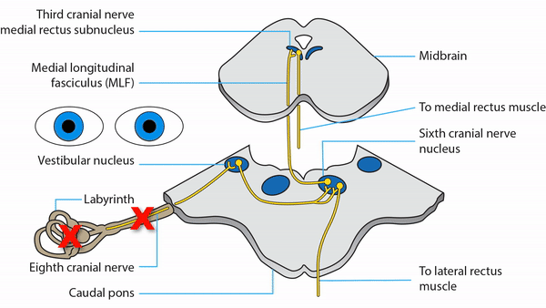

Vestibulo-Ocular Reflex


- Head or body movement or head tilt triggers a signal in the semicircular canals and otoliths
- Signal goes from the inner ear via the vestibular nerve to the medullary vestibular nuclei
- To generate the horizontal vestibulo-ocular reflex, the signal goes directly from the vestibular nucleus to the sixth nerve nucleus and from there via the MLF to the medial rectus nucleus and eventually to the lateral and medial rectus muscles to move the eyes horizontally
- To generate the vertical vestibulo-ocular reflex, the signal travels from the vestibular nuclei on both sides to the midbrain and from there to appropriate extraocular muscles to produce vertical shifts in the eyes
- To generate the torsional vestibulo-ocular reflex, the signal also goes to the midbrain and from there to appropriate extraocular muscles to produce conjugate ocular torsional movements


- Unilateral lesion of the semicircular canals, otolith, or vestibular nerve
-
Bilateral lesions of the semicircular canals, otolith, or vestibular nerves
- Produces horizontal contraversive binocular saccades in the head impulse test when the head is moved rapidly back and forth
- Produces impaired visual acuity in the dynamic visual acuity test when the head is moved passively back and forth
- Common cause: ototoxicity from aminoglycoside medication
-
Tip: bilaterally symmetric dysfunction of the semicircular canals or otoliths does not cause nystagmus!
-
Lesion of the pons or medulla
- Produces an abnormal static ocular tilt reaction, which causes conjugate ocular torsion and vertical misalignment of the eyes (“skew deviation”)
- May produce downbeat nystagmus by damaging the downgaze vestibulo-ocular reflex more than the upgaze vestibulo-ocular reflex
- May produce upbeat nystagmus by damaging the upgaze vestibulo-ocular reflex more than the downgaze vestibulo-ocular reflex
- Lesion of the thalamus or midbrain
